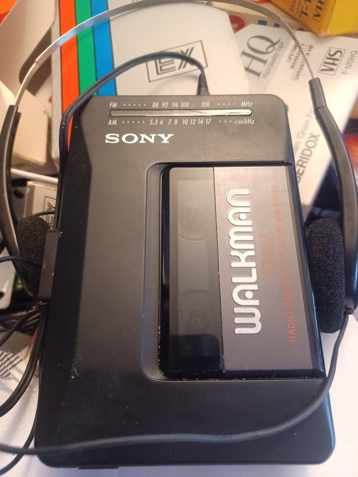

Introduction
The Sony Walkman was a revolutionary portable music player introduced by Sony in 1979. It allowed music enthusiasts to carry their favorite tunes with them wherever they went.
Although it's hard to imagine in today's world of smartphones and streaming services, the Walkman was a groundbreaking invention that changed the way people experienced music.
Features
- Compact and lightweight design
- Headphone jack for personal listening
- Replaceable cassette tapes for music storage
- Simple and easy-to-use controls
- Long-lasting battery life
Legacy
Even though it has been largely replaced by digital music players and smartphones, the Walkman remains an iconic symbol of the 80s and continues to hold a special place in the hearts of music enthusiasts.
